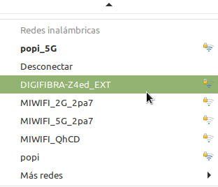
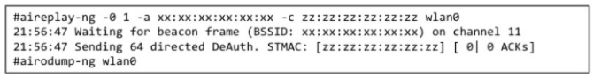
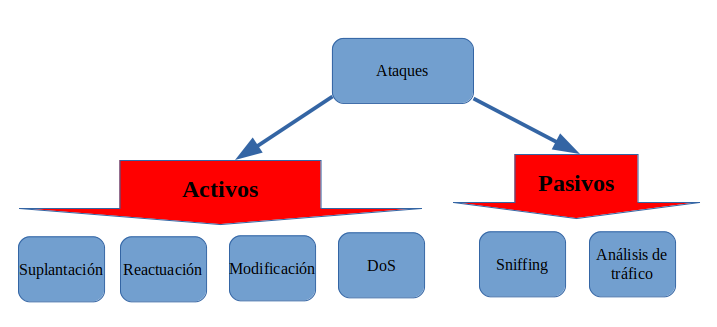

1. Seguridad en redes inalámbricas
1. Introducción
Actualmente, podemos decir que las redes inalámbricas se utilizan cada vez más superando ya en uso a las cableadas. Algunos de los factores determinantes para decantarse por su uso son:
- Reducción de costes que supone no necesitar una infraestructura de cable.
- La movilidad que permite a los usuarios desplazarse por una organización con sus equipos inalámbricos.
Algunos problemas que se pueden encontrar en el uso de este tipo de redes son:
- Falta de cobertura.
- Interferencia con puntos de acceso (AP) cercanos en el mismo canal.
- Presencia de inhibidores de frecuencia.
- Seguridad en el acceso.
2. Tecnología inalámbrica
Para que funcione una red inalámbrica, ésta debe tener el hardware y el software adecuados, ejemplos:
- Teléfonos inalámbricos.
- GPS.
- Equipos para la apertura de puertas de garaje.
- etcétera.
Componentes de las redes inalámbricas
Cuando un usuario se conecta a una red inalámbrica o accede a una estación wifi, ésta puede ser:
- Un router (o enrutador, dispositivo que permite interconectar dispositivos que funcionan en el rango de una red).
- Un punto de acceso, que amplía la red.
Además, para conectarse al AP o router, el usuario ha de disponer en su equipo de una tarjeta de interfaz de red inalámbrica (WNIC).
Ejemplo: Un usuario necesita de forma urgente comprobar su correo corporativo y no dispone de una conexión de datos.

WiFi insegura (Pixabay License)
Un punto de acceso (AP) es un transceptor que se conecta a un cable Ethernet y tiene las siguientes funciones:
- Conecta la red inalámbrica con la red cableada aunque no todas las redes inalámbricas se conectan a una red cableada.
- La mayoría de las empresas tienen LAN inalámbricas (WLAN) que se conectan a su topología de red cableada.
En el punto de acceso (AP) es donde se configuran los canales y sólo está disponible dentro de un área definida.
Identificadores de conjuntos de servicios (SSID)
El SSID es el nombre utilizado para identificar la red de área local inalámbrica (WLAN). Sus características son:
- El SSID está configurado en el AP.
- Es un nombre alfanumérico único de 1 a 32 caracteres.
- El nombre distingue entre mayúsculas y minúsculas.
- Los equipos inalámbricos necesitan configurar el SSID antes de conectarse a una red inalámbrica.

El SSID se transmite con cada paquete para identificar a qué red pertenece el mismo. Generalmente el AP transmite el SSID aunque se puede configurar el AP para que no transmita su SSID hasta después de la autenticación.
Uno de los problemas comunes que se encuentran en las auditorías de las redes inalámbricas es que los AP mantienen el SSID configurado por el proveedor dado que en la empresa al instalarlo no se ha modificado. Se tendría que cambiar el nombre en todos los AP de la red inalámbrica.

2. ¿Cuáles son riesgos de que alguien se conecte a una red WiFi abierta?
Si se establece una conexión hacia una red sin contraseña, se realizará una conexión automática sin necesidad de hacer mayor esfuerzo, pero no es una buena práctica, ya que el dispositivo puede ser infectado o atacado con la intención robar información sensible.
Vídeo 1. Ejemplo de acceso a wifi sin contraseña.
Este tipo de redes públicas se pueden encontrar en un aeropuerto o una cafetería, pero también puede que sea un punto de acceso malicioso y alguien con malas intenciones, puede escuchar el tráfico para analizarlo e intentar extraer información de los dispositivos que se conecten a esa red pública e insegura (sin contraseña). Por ejemplo, robar credenciales de acceso de un correo electrónico.
Para añadir un poco más de control sobre las redes inalámbricas hay que asegurarse de conocer donde se está estableciendo esa conexión y si es de confianza.
3. ¿Cuáles son riesgos de que alguien se conecte al red WiFi empresarial?
Alguno de los riesgos más significativos pueden ser:
- El robo de información confidencial. Cuando un intruso se conecta a una red privada, podría acceder tanto a dispositivos como al tráfico generado (correo, web, etc).
- Utilizar la red para realizar acciones ilegales, una vez dentro de la red de la organización podría usar los dispositivos que se encuentren en la misma para llevar a cabo movimientos sospechosos o ilegales, como aplicar una denegación de servicio (DoS) a una página web. Estas acciones ilegales pueden tener consecuencias, en caso de denuncia seremos nosotros como titulares de la red los perjudicados, puede suponer cortes temporales de servicio, problemas legales con los afectos, etc.
- Infección de dispositivos con malware (programa malicioso), pueden que dejen de funcionar o que incluso esos dispositivos lleguen a infectar a otros alargando la vida del malware.
- Reducción del ancho de banda, dependiendo del número de intrusos o del alcance de su intrusión, se puede detectar una reducción del rendimiento de la conexión.
pero... ¿Cómo lo hacen?
Los intrusos aprovechan una incorrecta configuración de la seguridad en el router. Dependiendo del método de seguridad que se utilice, se ofrecerá más o menos resistencia para el intruso, pero conseguirán conectarse sin problemas si se presenta alguna de las siguientes debilidades.
{kind=link}
Figura 1. Debilidades en el router Wifi.
4. ¿Cómo proteger la red?
Si se quiere minimizar la probabilidad de ser víctimas de un ataque que pueda poner en riesgo la red WiFi hay que protegerse para evitar esos ataques al usar las redes inalámbricas.
Lo más básico será aplicar estas modificaciones:
- Cambiar la contraseña de acceso al router.
- Modificar el nombre de la red inalámbrica (SSID).
- Cambiar la contraseña de acceso a la red wifi.
- Actualización del Firmware (software o programa informático que controla las funcionalidades de un dispositivo físico o un hardware concreto como un router).
- Configurar la red wifi con cifrado con protocolos de seguridad más avanzado dependiendo de que dispositivo tengamos (WPA2).
- Desactivar WPS.
- Implementar una red para invitados.
- Habilitar filtrado por dirección MAC.
- Reducir los rangos de direcciones IP permitidas.
- Deshabilitar la administración remota.
- Deshabilitar UPnP (Universal Plug and Play).
- Establecer horarios y desactivar la red WiFi fuera de este horario.
5. ¿Cómo detectar a un intruso?
Una sencilla manera para detectar un intruso puede ser la comprobación de los equipos conectados, si se dispone de un listado de activos actualizado se puede compararlos con los dispositivos que están conectados.
Hoy en día los routers además de identificar los equipos conectados permiten etiquetarlos lo que hace que resulte más sencilla y rápida esta comprobación.
Conocer la infraestructura de red es de vital importancia, por lo que si además de un listado de activos se dispone de un mapa de la red, se podrán realizar comprobaciones periódicas de su estado.
6. Tipos de ataques en redes inalámbricas
Dado que las comunicaciones inalámbricas viajan por el aire, un usaurio equipado con un equipo que opere en el rango de frecuencias adecuado y dentro del área de cobertura de la red
podría captarlas.
Los ataques de seguridad a las WLAN se pueden agrupar en dos categorías:
- Ataques activos: el atacante accede a la red con el fin de alterar y/o modificar la información que se encuentra en ella.
- Ataques pasivos: el atacante accede a la red con el fin de capturar la información intercambiada entre los extremos de la comunicación.

Figura 2. Tipos de ataques en una red inalámbrica.
6.1 Suplantación
La suplantación consiste en la obtención de la identidad de un usuario autorizado por parte del atacante. El método más simple para realizar este tipo de ataque es utilizar una dirección MAC válida para suplantar la identidad e identificarse como cliente autorizado. Este tipo de ataque normalmente incluye otros tipos de ataques activos, ejemplos:
- Honeypot: El atacante coloca un AP configurado con el mismo ESSID de la red a atacar dentro del área de cobertura de esa red y espera a que un usuario legítimo se conecte e intente validarse con su usuario y contraseña para así obtenerla.
- Man in the Middle: el atacante se ubica entre el cliente y el AP consiguiendo así controlar la comunicación entre ambos. Todos los datos entre cliente y AP pasarán por manos del atacante, pudiendo guardarla, modificarla, alterarla, etcétera.
- MAC Spoofing: el atacante, mediante captura de paquetes, obtiene la dirección MAC de un cliente legítimo y substituye la de su tarjeta de red por la obtenida, para así saltarse la protección por MAC de los APs.
- etcétera.
6.2 Reactuación
Consiste en capturar mensajes legítimos y repetirlos para producir un efecto no deseado, como por ejemplo repetir ingresos de dinero, envío masivo de de emails, etcétera.
6.3 Modificación
Consiste en capturar mensajes enviados por un usuario autorizado y modificarlos, borrarlos o reordenarlos, para producir un efecto no autorizado. Ejemplo: capturar un mensaje que diga “Realizar un ingreso en efectivo en la cuenta A”, y modificar el número de cuenta por “B”.
6.4 Denegación de Servicio
Consiste en evitar que los clientes legítimos consigan acceder a la red o a un servicio que esta ofrezca. Ejemplo: saturar el ambiente con ruido de RF, inyectar mucho tráfico a la red para disminuir su rendimiento o colapsarla, saturar a peticiones de autenticación a un Punto de Acceso inalámbrico, etcétera.
6.5 Sniffing
Consiste en capturar el tráfico de una red para posteriormente poder obtener datos de ellas como por ejemplo direcciones IP, direcciones MAC, direcciones de correo electrónico, etcétera.
6.6 Análisis de tráfico
Consiste en obtener información mediante el análisis del tráfico y sus patrones. Ejemplo: conocer a que hora se encienden ciertos equipos, cuanto tráfico se envía, a que horas hay más tráfico, etcétera.
6.7 Ataque por fuerza bruta
Consiste en, a partir de la captura de mensajes, probar todas las combinaciones de caracteres posibles para así obtener la clave WEP. Para realizar este ataque es indispensable conocer el texto
en claro y el texto cifrado del mensaje. Este proceso puede llegar a ser extremadamente lento dependiendo de la longitud de la clave y de la variedad de caracteres utilizados.
7. Referencias
Obra publicada con Licencia Creative Commons Reconocimiento No comercial Compartir igual 4.0